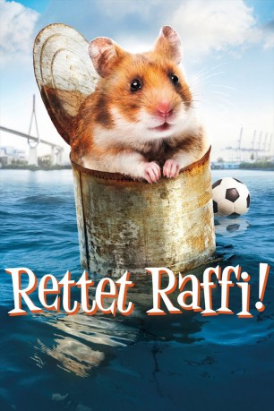

gesehen am 17.10.2016
gesehen am 17.10.2016Alternativ: Rettet Raffi! gesehen am 17.10.2016
 
 IMDB-Wertung: 5.6 / 10
IMDB-Wertung: 5.6 / 10  Metascore:
Metascore: 
Der achtjährige Samuel Wiese fühlt sich sehr einsam, seit sein Vater vor einem Jahr die Familie verließ, um als Arzt in Afghanistan zu arbeiten. Besonders wichtig ist ihm nun sein kleiner Goldhamster Raffi, den er von seinem Papa bekommen und der einige erstaunliche Tricks auf Lager hat, wie z. B. in seinem Käfig Tore zu schießen. Entsprechend geschockt ist Sammy, als Raffi eines Tages nach einer Herz-Operation einfach entführt wird. Kurz entschlossen und ohne seiner Mutter Helene oder seiner älteren Schwester Molly davon zu erzählen, macht er sich allein auf den Weg, um seinen kleinen Freund im großen Hamburg wiederzufinden. Aber wie findet man in einer Metropole mit gut 1,7 Millionen Einwohnern einen Hamster?
Jahr: 2015
Dauer: 97 Minuten
FSK: 0
Land: Deutschland Studio: MFA FilmdistributionTonspuren:
Untertitel:
Auflösung: 1080p (1920x1080) Größe: 4997 MB
Genre: Action, Abenteuer, Krimi, Familie
Regisseur: Arend Agthe
Drehbuch: Arend Agthe, Bettina Kupfer
Soundtrack: Matthias Raue
Darsteller:
 Claes Bang als Henry Wiese
Claes Bang als Henry Wiese Dirk Martens als Pförtner
Dirk Martens als Pförtner Michael Ihnow als Polizist 1
Michael Ihnow als Polizist 1Datei: X:\Kinder Filme (N-Z)\Rettet Raffi! - Der Hamsterkrimi (2015, FSK0, 1920x1080).mkv seit 31.03.2016
Festplatte: Kinder-Filme+Trick
 Es gibt insgesamt 87 Filme in der Gruppe 'Kinder Filme (N-Z)'
Es gibt insgesamt 87 Filme in der Gruppe 'Kinder Filme (N-Z)'